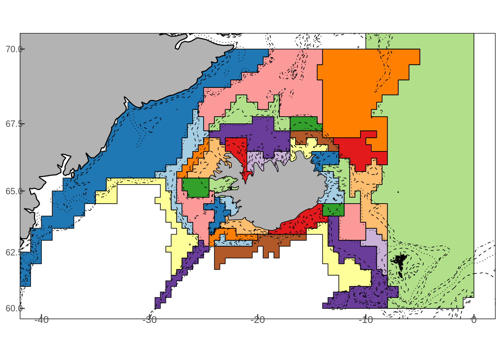

11 Processing input data with MFDB
11.1 Working with data
Fisheries stock assessment aims to provide a satisfactory level of catch based the estimated stock status. Typically this means the abundance or biomass of the resource in question. In all but rare cases it is next to impossible to observe these numbers directly as the fish species in question live in the deep oceanc. Therefore the most of the information on the population is derived from assumptions on the population dynamics combined with observations on various aspects of the population. This includes relative abundance/biomass from scientific surveys and catch size and/or age composition.
Assessing stock or ecosystem status is therefore often a exhaustive exercise of data gathering and aggregation. The assessment method often require that the data are pre-processed in a certain manner in order for them to be used and it is in this processing of the data is where the stock assessor needs to draw on insights to piece them together. Examples of this expert judgment process is the borrowing of age length keys between years and/or gears or filling up length distribution for certain days. On of the key utilities of Gadget is its ability to digest this disparate array of observations with minimal aggregation, ensuring that when observations are truly available for a stock/gear/time combination it can be compared with model output and effectively moves the “guess-work” into the model where is belongs.
Regardless of the modeling approach employed, fisheries stock assessment requires robust data management especially for those assessment that are used annually to produce advice on catch advice as it is imperative for whole process to be reproducible between years. There has been increased interest in developing tools/procedures to ensure this reproducibility which can be seen from project such as the ICES TAF and stockassessment.org. One such project, MFDB, was developed explicitly to deal with formatting data for ecosystem models and Gadget models. In this chapter an overview of the key components of the MFDB system is provided with simple illustration based on Icelandic data.
11.2 Description of the MFDB system
MFDB is essentially a custom built database system written to smooth out kinks in the process of collating the various snippets of data. The user interface is written entirely in R allowing the user to leverage the tools available in the R environment thus enabling automated processing of fisheries data into suitable forms for running ecosystem models against it such as Gadget
MFDB contains several distinct sets of functions:
- Create and connect to a PostgreSQL database schema (mfdb function)
- Import data into a PostgreSQL database (mfdb_import_* functions)
- Sample / group data from database (other mfdb_* functions)
Using this, you can install PostgreSQL locally and have a script automating the process of:
- Importing data from your sources
- Uploading into your local MFDB database
- Sampling / grouping this data
- Producing set of Gadget data files ready to be run by Gadget
Also, MFDB can be used to connect to a remote database and generate model files from that data.
Before doing anything with mfdb, it is worth knowing a bit about how data is stored. Broadly, there are 2 basic types of table in mfdb, taxonomy and measurement tables.
The measurement tables store all forms of sample data supported, at the finest available detail. These are then aggregated when using any of the mfdb query functions. All measurement data is separated by case study, so multiple case studies can be loaded into a database without conflicts.
Taxonomy tables store all possible values for terms and their meaning, to ensure consistency in the data. For example, species stores short-names and full latin names of all known species to MFDB, to ensure consistency in naming.
Most Taxonomies have defaults which are populated when the database is created, and their definitions are stored as data attached to this package. See mfdb-data for more information on these. Others, such as areacell and sampling_type are case study specific, and you will need to define your terms before you can import data.
11.2.1 Installing MFDB
MFDB is available from CRAN and is intalled in the typical fashion:
However MFDB requires that the user has access to a running postgreSQL database. To install postgreSQL on your local machine you can follow these instructions but if you expect more users working on the same DB it may be wise to consider installing it on a (widely) accessible server.
11.3 Importing data
Unless you are working with a remote database, you will need to populate the database at least once before you are able to do any querying. The steps your script needs to do are:
11.3.1 Connect to database
Use the mfdb() function. This will create tables / populate taxonomies if necessary. The user opens the link with the following command:
where the string the mfdb represents the “case study”, or simply just the data set the user want to link to. Note that this string can be set as anything allowing the user to maintain different versions of the data depending on the time (e.g. between assessment periods). If it is the first time the mfdb function is called with a particular case study name it will spew out a lot of gunk similar to:
2020-09-27 14:25:41 INFO:mfdb:No schema, creating test
2020-09-27 14:25:41 INFO:mfdb:Creating schema from scratch
NOTICE: CREATE TABLE / PRIMARY KEY will create implicit index "case_study_pkey" for table "case_study"
NOTICE: CREATE TABLE / UNIQUE will create implicit index "case_study_name_key" for table "case_study"
NOTICE: CREATE TABLE / PRIMARY KEY will create implicit index "institute_pkey" for table "institute"
NOTICE: CREATE TABLE / UNIQUE will create implicit index "institute_name_key" for table "institute"
NOTICE: CREATE TABLE / PRIMARY KEY will create implicit index "gear_pkey" for table "gear"
NOTICE: CREATE TABLE / UNIQUE will create implicit index "gear_name_key" for table "gear"
NOTICE: CREATE TABLE / PRIMARY KEY will create implicit index "vessel_type_pkey" for table "vessel_type"
NOTICE: CREATE TABLE / UNIQUE will create implicit index "vessel_type_name_key" for table "vessel_type"
NOTICE: CREATE TABLE / PRIMARY KEY will create implicit index "market_category_pkey" for table "market_category"
NOTICE: CREATE TABLE / UNIQUE will create implicit index "market_category_name_key" for table "market_category"
NOTICE: CREATE TABLE / PRIMARY KEY will create implicit index "sex_pkey" for table "sex"
...
where the database is simply notifying the user that it is populating the case study schema.
If the user want to connect to a remote server you can specify the connection using the db_params argument:
where the connection parameters are specified appropriately. In addition, the schema can be destroyed (e.g. when you want to start again) using destroy_schema = TRUE when connecting to the database.
11.3.2 Defining taxonomies
The MFDB system has a number of taxonomies, some of which are populated by default while other are defined by the user when importing and will be linked to the data when imported and used to filter it when exported. These taxonomies can be are listed by calling:
## [1] "case_study" "institute" "gear" "vessel_type"
## [5] "market_category" "sex" "maturity_stage" "species"
## [9] "stomach_state" "digestion_stage" "areacell" "sampling_type"
## [13] "data_source" "index_type" "tow" "vessel"The following tables are populated by default but can be extended based on the different needs that may arise:
gear
maturity_stage
sex
species
vessel_type
The other taxonomies such as area divisions, tow locations and vessels will need to be defined by the user.
11.3.3 Define areas & divisions
MFDB models space in the following way:
areacell- The finest level of detail stored in the database. Every measurement (e.g. temperature, length sample) is assigned to an areacell. This will generally correspond to ICES gridcells, however there is no requirement to do so. You might augment gridcell information with depth, or include divisions when the measurement doesn’t correlate to a specific areacell.
division- Collections of areacells, e.g. ICES subdivisions, or whatever is appropriate.
Finally, when querying, divisions are grouped together into named collections, for instance mfdb_group(north = 1:3, south = 4:6) will put anything in divisions 1–3 under an area named “north”, 4–5 under an area named “south”.
Before you can upload any measurements, you have to define the areacells that they will use. You do this using the mfdb_import_area() function. This allows you to import tables of area/division information, such as:
mfdb_import_area(mdb,
data.frame(area = c('101', '102', '103', '401','402', '403'),
division = c('1', '1', '1', '4', '4', '4')))If you want areas to be part of multiple divisions, then you can use mfdb_import_division() to import extra revisions.
In the case of the area around Iceland the grid cells are defined from coordinates \((x,y)\) using the following formula:
\[\Gamma(x,y) = 10*\left(100*(\lfloor{2*y}\rfloor/2 - 60) + \lfloor{x}\rfloor \right) + \begin{cases} 0 & s(-(x - \lfloor{2*x}\rfloor/2)) \in \{2,4,6\} \\ 1 & s(-(x - \lfloor{2*x}\rfloor/2)) = 4\\ 2 & s(-(x - \lfloor{2*x}\rfloor/2)) = 1\\ 3 & s(-(x - \lfloor{2*x}\rfloor/2)) = 7\\ 4 & s(-(x - \lfloor{2*x}\rfloor/2)) = 3\\ \end{cases} \]
and this is implemented in the d2sr function from the geo-package:
# install from github
#devtools::install_github('hafro/geo')
## note lon is assume from west to east not vice-versa
geo::d2sr(lat = 66, lon = 20) The grid cells can then be split up into divisions based on a collection of grid cells as illustrated in the figure below:

where the subdivision were selected based on a cluster analysis of survey data and depth contours (see the DST\(^2\) final report). The mapping of area cells to division can be read from the reitmapping.tsv file which is installed as a part of MFDB. It can be loaded it into memory with the following command:
reitmapping <-
read.table(
system.file("demo-data", "reitmapping.tsv", package="mfdb"),
header=TRUE,
as.is=TRUE)The areas and divisions of the Icelandic continental shelf area are defined by the following commands:
11.3.4 Define sampling types
Any survey data can have a sampling type defined, which then can be used when querying data. If you want to use a sampling type, then define it using mfdb_import_sampling_type(). It is useful to give the different survey and commercial samples from various sampling projects separate to be able handle them differently when defining the likelihood function for the model. The function requires three columns to be defined:
idnamekey to be used for the samplesdescriptionof the sampling type
An example of the definition of sampling types for Icelandic waters:
mfdb_import_sampling_type(mdb, data.frame(
id = 1:18,
name = c('SEA', 'IGFS','AUT','SMN','LND','LOG','INS','ACU','FLND','OLND','CAA',
'CAP','GRE','FAER','RED','RAC','LOBS','ADH'),
description = c('Sea sampling', 'Icelandic ground fish survey',
'Icelandic autumn survey','Icelandic gillnet survey',
'Landings','Logbooks','Icelandic nephrop survey',
'Acoustic capelin survey','Foreign vessel landings','Old landings (pre 1981)',
'Old catch at age','Capelin data','Eastern Greenland autumn survey',
'Faeroese summer survey','Redfish survey','Redfish accoustic survey',
'Icelandic nephrops survey','Ad-hoc surveys')))11.3.5 Define vessel taxonomy
Data that is imported can be linked to vessel where basic information on the vessel can attached to the vessel name/ID. The following columns will need to be present in the imported vessel list:
nameID of the vessel, used in the tow taxonomylengthof the vesseltonnagethe capacity of the vesselpowerthe engine powerfull_namegives the full name of the vesselvessel_typelinked to the vessel type taxonomy
To import the vessel list the following command is used:
11.3.6 Define tow taxonomy
The tow taxonomy registers exact location and depth of the sample, in order for multiple samples can be linked to the same tow. To define a tow the input data frame can contain the following columns:
namethe ID of the towlatitudeinitial position of the towlongitudeend_latitudeend position of the towend_longitudedepththe depth measured in the towlengthlength of the towdurationtime duration
Tows are imported in a similar fashion as vessel taxonomies:
11.4 Importing data
11.4.1 Import temperature data
At this point, you can start uploading actual measurements. The easiest of which is temperature. Upload a table of areacell/month/temperature data using mfdb_import_temperature():
## here some work on temperature would be nice to have instead of fixing the temperature
mfdb_import_temperature(mdb,
expand.grid(year=1900:2100,
month=1:12,
areacell = reitmapping$GRIDCELL,
temperature = 3))Obviously it it would be more useful to have actual temperature data stored in these area cells but since this is rarely used in Gadget models it will not be considered further here.
11.4.2 Importing survey/commercial samples
The function mfdb_import_survey() allows the user to import biological samples from various sources. Ideally data should be uploaded in separate chunks based on the data source. For example, if you have length and age-length data, don’t combine them in R, instead upload them separately and both will be used when querying for length data. This keeps the process simple, and allows you to swap out only the data that needs to be update as necessary. The function accepts data frames of the following format:
instituteOptional. An institute name, seemfdb::institutefor possible valuestowOptional. Tow defined previously withmfdb_import_tow_taxonomy(...)gearOptional. Gear name, seemfdb::gearfor possible valuesvesselOptional. Vessel defined previously withmfdb_import_vessel_taxonomy(...)sampling_typeOptional. A sampling_type, seemfdb::sampling_typefor possible valuesyearRequired Year each sample was taken, e.g.c(2000,2001)monthRequired. Month (1–12) each sample was taken, e.g.c(1,12)areacellRequired. Areacell sample was taken withinspeciesOptional, defaultc(NA). Species of sample, seemfdb::speciesfor possible valuesageOptional, defaultc(NA). Age of sample, or mean agesexOptional, defaultc(NA). Sex of sample, seemfdb::sexfor possible valuesmaturity_stagelengthOptional, defaultc(NA). Length of sample / mean length of all sampleslength_varOptional, defaultc(NA). Sample variance, if data is already aggregatedlength_minOptional, defaultc(NA). Minimum theoretical length, if data is already aggregatedweightOptional, defaultc(NA). Weight of sample / mean weight of all samplesweight_varOptional, defaultc(NA). Sample variance, if data is already aggregatedweight_totalOptional, defaultc(NA). Total weight of all samples, can be used withcount = NAto represent an unknown number of samplescountOptional, defaultc(1). Number of samples this row represents (i.e. if the data is aggregated)
Note that the data_source argument gives a name for the uploaded data set and it allows you repeat the re-upload only this chunk of data if and when corrected data become available.
11.4.3 Import stomach survey
Stomach surveys are imported in much the same way, however there are 2 data.frames, one representing predators, one preys. The column stomach_name links the two, which can contain any numeric / character value, as long as it is unique for predators and prey measurements are assigned to the correct stomach.
See mfdb_import_survey for more information or the demo directory for concrete examples.
11.5 Querying data
There are a selection of querying functions available, all of which work same way. You give a set of parameters, each of which can be a vector of data you wish returned, for instance year = 1998:2000 or species = c('COD').
If also grouping by this column (i.e. ‘year’, ‘timestep’, ‘area’ and any other columns given, e.g. ‘age’), then the parameter will control how this grouping works, e.g. maturity_stage = mfdb_group(imm = 1, mat = 2:5) will result in the maturity_stage column having either ‘imm’ or ‘mat’. These will also be used to generate Gadget aggregation files later.
For example, the following queries the temperature table:
defaults <- list(
area = mfdb_group("101" = ),
timestep = mfdb_timestep_quarterly, # Group months to create 2 timesteps for each year
year = 1996:2005)
agg_data <- mfdb_temperature(mdb, defaults)
All functions will result in a list of data.frame result tables (generally only one, unless you requested bootstrapping). Each are suitable for feeding into a gadget function to output into model files.
See mfdb_sample_count for more information or the demo directory for concrete examples.
11.6 Uploading the DATRAS database to MFDB
The following gives an illustrative example of how the DATRAS survey data are uploaded to MFDB.
# devtools::install_github('ices-tools-prod/icesDatras')
# devtools::install_github('ices-tools-prod/icesFO',dependencies = FALSE)
# devtools::install_github('fishvice/tidyices')
# devtools::install_github('hafro/geo')
library(icesDatras)
library(mfdb)
library(tidyices)
library(tidyverse)
mdb <- mfdb('datras')
yrs <- 2017 # years
qs <- c(1) # quarters
hh <-
icesDatras::getDATRAS(record = "HH",
survey = "NS-IBTS",
years = yrs,
quarters = qs) %>%
dtrs_tidy_hh()
hl <-
icesDatras::getDATRAS(record = "HL",
survey = "NS-IBTS",
years = yrs,
quarters = qs) %>%
dtrs_tidy_hl(hh)
ca <-
icesDatras::getDATRAS(record = "CA",
survey = "NS-IBTS",
years = yrs,
quarters = qs) %>%
dtrs_tidy_ca()
## Setup the spatial taxonomy
hh <- hh %>%
mutate(areacell = geo::d2sr(shootlat,shootlong))
hh %>%
select(areacell) %>%
distinct() %>%
mutate(id = 1:n(),
lat = geo::sr2d(areacell)$lat,
lon = geo::sr2d(areacell)$lon,
area = geo::srA(areacell)) %>%
select(id, name=areacell,size = area) %>%
mfdb_import_area(mdb,.)
## Setup sampling types
mfdb_import_sampling_type(mdb, data.frame(
id = 1:3,
name = c('NS-IBTS','SEA','LND'),
description = c('North Sea IBTS','Catch samples','Landings')))
## upload tow taxonomy (optional)
# select(synis_id,ar,man,lat=kastad_n_breidd,lon=kastad_v_lengd,lat1=hift_n_breidd,lon1=hift_v_lengd,
# gear,sampling_type,depth=dypi_kastad,vessel,reitur,smareitur)
hh %>%
select(sampling_type = survey,
name = id,
year,
month = quarter,
latitude = shootlat,
longitude = shootlong,
towlength = hauldur,
depth,
vessel = ship) %>%
mfdb_import_tow_taxonomy(mdb,.)
## setup vessel taxonomy
hh %>%
select(name = ship) %>%
distinct() %>%
mutate(length=NA,tonnage=NA,power=NA, full_name = name) %>%
mfdb_import_vessel_taxonomy(mdb,.)
## import length data
hh %>%
left_join(hl) %>%
select(sampling_type = survey,
areacell,
tow = id,
year,
month = quarter,
latitude = shootlat,
longitude = shootlong,
towlength = hauldur,
depth,
vessel = ship,
latin,
length,
sex,
count = n)%>%
mutate(latin = tolower(latin),
gear = 'BMT') %>%
left_join(mfdb::species %>%
mutate(latin = gsub('.+\\((.+)\\)','\\1',description),
latin = tolower(latin)) %>%
rename(species = name)) %>%
mutate(species = as.character(species)) %>%
select(-c(id,latin,description)) %>%
as.data.frame() %>%
mfdb_import_survey(mdb,.,data_source = 'DATRAS-lengths')
## import biological information
hh %>%
left_join(ca) %>%
select(sampling_type = survey,
areacell,
tow = id,
year,
month = quarter,
latitude = shootlat,
longitude = shootlong,
towlength = hauldur,
depth,
maturity,
weight = wgt,
vessel = ship,
latin,
length,
sex,
count = n) %>%
mutate(maturity_stage = pmin(as.numeric(maturity) - 60,5)) %>%
mutate(latin = tolower(latin),
gear = 'BMT') %>%
left_join(mfdb::species %>%
mutate(latin = gsub('.+\\((.+)\\)','\\1',description),
latin = tolower(latin)))%>%
select(-c(id,latin,description)) %>%
rename(species = name) %>%
mutate(species = as.character(species)) %>%
as.data.frame() %>%
mfdb_import_survey(mdb,.,data_source = 'DATRAS-ages')
## upload landings
tibble(year = 2017,month = 1, areacell = -3548,
species = 'WHG', weight_total = 1000,
gear = 'BMT',sampling_type = 'LND') %>%
as.data.frame() %>%
mfdb_import_survey(mdb,.,data_source = 'test-landings')11.7 Dumping / Restoring a DB
You can also dump/import a dump from another host using the postgres pg_dump and pg_restore commands. You can dump/restore indvidual schemas (i.e. the case study you give to the mfdb() command), to list all the schemas installed run SELECT DISTINCT(table_schema) FROM information_schema.tables from psql. Note that if you use mfdb('Baltic'), the Postgres schema name will be lower-cased.
Create a dump of your chosen schema with the following command:
pg_dump --schema=baltic -F tar mf > baltic.tarThis will make a dump of the “baltic” case study into “baltic.tar”. It can then be restored onto another computer with the following:
pg_restore --clean -d mf baltic.tarIf you already have a baltic schema you wish to preserve, you can rename it first by issuing ALTER SCHEMA baltic RENAME TO baltic_o in psql. Once the restore is done you can rename the new schema and put the name of the old schema back.